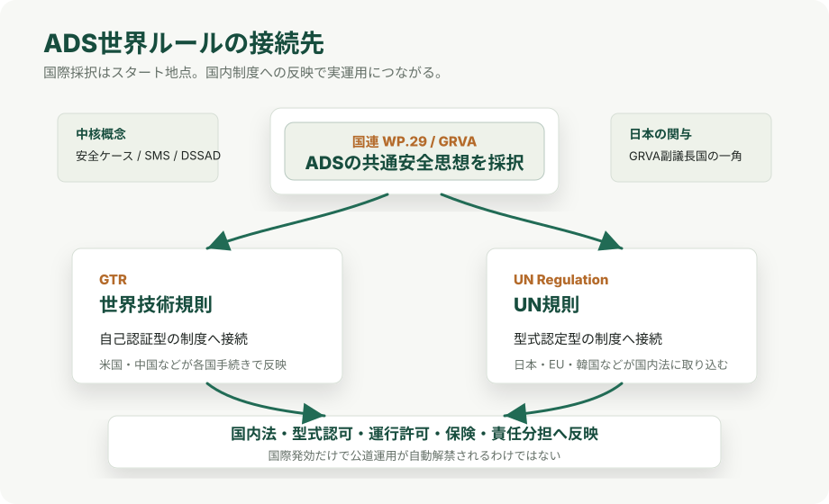

Mobility / Autonomous Driving
自動運転の世界ルールは何が決まるのか
自動運転ラボは、国連の車両規制調和フォーラムWP.29が2026年6月23日から26日の会合で、自動運転システムADSの世界統一規則を採決すると報じました。 ここでは、何が決まるのか、日本がどこで関わっているのか、採択されてもすぐ路上で何でもできるわけではない理由を整理します。
結論
2026年6月23日から26日に予定されるWP.29会合の焦点は、自動運転システムADSを国際的にどう認めるかの共通枠組みです。 報道によれば、会期中の採決は6月24日が見込まれ、可決されれば国際レベルでは即日発効します。
重要なのは、この世界ルールが「車両が満たすべき細かな数値を一律に並べるだけ」の規則ではない点です。 メーカーが、自社のADSが想定する運行範囲で、有能で慎重な人間ドライバーと少なくとも同等の安全水準にあることを根拠付きで示す「安全ケース」を中核にします。 さらに、安全マネジメントシステム、シナリオに基づく評価、市販後の監視、ADS用データ記録装置などが組み合わさります。
ただし、採択はそのまま日本の公道でロボタクシーや無人車両が自由に走れることを意味しません。 国際ルールは車両の認証や評価の土台であり、実際に走らせるには各国の道路交通法、道路運送車両法、運行管理、責任分担、保険、自治体の許認可などに落とし込む必要があります。
全体像

今回の話を理解する鍵は、WP.29、GRVA、GTR、UN規則の4つです。 WP.29は国連欧州経済委員会の車両規制調和フォーラムで、車両の安全・環境・盗難防止などの国際規則を扱います。 GRVAはその下で自動運転、自動運転支援、コネクテッド車両、サイバーセキュリティなどを扱う専門部会です。
今回のADS規則は、米国や中国のような自己認証型の制度にも、日本やEU、韓国のような型式認定型の制度にも接続できるよう、二本立てで扱われます。 つまり、制度の形は各国で違っても、安全評価の考え方をそろえることが狙いです。
何が決まるのか
| 項目 | 内容 | 初心者向けの意味 |
|---|---|---|
| 対象 | ADS、つまり特定の運行設計領域ODD内で、動的運転タスクDDTを継続的に実行する自動運転システム。 | 単なる車線維持支援ではなく、条件内で運転そのものをシステムが担う領域を扱う。 |
| 安全ケース | メーカーが、システムの設計、試験、シナリオ評価、残余リスク、監視体制を根拠付きで説明する考え方。 | 「この車は安全です」と宣言するだけでなく、なぜ安全と言えるのかを証拠で示す。 |
| 安全マネジメント | 開発、変更、市販後監視、ソフトウェア更新、事故・不具合対応までを管理する仕組み。 | 発売時だけでなく、運用中も安全を維持する体制が問われる。 |
| シナリオ評価 | 合流、右左折、横断、歩行者、悪条件など、想定される交通場面でADSの振る舞いを評価する。 | 公道で起きる複雑な場面を、試験・シミュレーション・実走で組み合わせて確認する。 |
| データ記録 | DSSADのようなADS用データ記録装置で、作動状態や引き継ぎ、イベントを追跡できるようにする。 | 事故やトラブル時に、人が運転していたのか、システムが運転していたのかを確認しやすくする。 |
| 国際接続 | GTRとUN規則の二本立てで、自己認証型と型式認定型の両方の制度へつなぐ。 | 世界中の制度を完全に同じにするのではなく、同じ安全思想を各国制度に取り込めるようにする。 |
GTRとUN規則の違い
今回の規則が分かりにくいのは、一本の「世界法」ができるわけではないからです。 自動運転ラボの記事では、採決対象は世界技術規則GTRとUN規則の二本立てだと整理されています。 背景には、車両の安全を確認する制度が国ごとに違うという事情があります。
| 枠組み | 主に接続する制度 | 特徴 |
|---|---|---|
| GTR | 米国、中国などが関わる自己認証型・各国独自制度との接続。 | 世界技術規則として共通の性能要件や試験・評価の考え方を示し、各国が自国手続きで反映する。 |
| UN規則 | 日本、EU、韓国などの型式認定型制度との接続。 | 当局や技術機関が型式認可に使う規則として国内法へ取り込みやすい。 |
たとえばEUでは、Commission Implementing Regulation (EU) 2022/1426が、完全自動運転車のADS型式認可について、シナリオ、メーカー文書、安全マネジメント、市販後データなどを要求しています。 これは今回の国連ルールそのものではありませんが、ADSを「試験だけで一発合格」ではなく、設計根拠と運用後監視を含めて評価する方向性を理解するうえで参考になります。
日本はなぜ中核にいるのか
日本が注目される理由は、単に自動車産業が大きいからではありません。 自動運転ラボは、GRVA本体で日本が副議長国の一角を担い、作業部会や専門家会合でも日本が共同議長や副議長を務める場面があると説明しています。 つまり、出来上がった規則に従うだけでなく、規則の作り方そのものに関わっているということです。
また、日本には実装実績もあります。 Hondaは2021年3月、Honda SENSING Eliteを搭載したLegendを日本でリース販売し、そのTraffic Jam Pilotが限定領域でのレベル3自動運転に該当すると説明しました。 Hondaの発表では、この機能は国土交通省から型式指定を受けており、日本は「ルールを作る側」と「実際に型式認可して走らせた側」の両方の経験を持っています。
これは今後の産業競争にも効きます。 自動運転は、AIやセンサーだけで勝負が決まる技術ではありません。 事故時の記録、責任分担、認証手続き、ソフトウェア更新、市販後監視まで含めて、社会が受け入れられる制度を作れるかが普及速度を左右します。
主要国の見方
- 日本。 型式認定型の制度を持ち、レベル3市販車の認可実績があります。 国際基準を国内の道路運送車両法や保安基準にどう取り込むかが次の焦点になります。
- EU。 既に完全自動運転車のADS型式認可に関する規則を整備しており、国際ルールとの整合性を取りながら量産・域内承認の道筋を作る立場です。
- 米国。 自己認証型の制度が中心で、連邦法の包括的な自動運転制度は長く課題になっています。 GTR側の議論は、米国制度にも接続しやすい共通技術要件を作る意味を持ちます。
- 中国。 自国の国家標準整備を進めつつ、今回の世界規則の構造に沿う姿勢を示していると報じられています。 独自市場の大きさと国際標準への接続を両立させる動きです。
採択されたら何が変わるのか
一番大きな変化は、メーカー、当局、保険、自治体、運行事業者が同じ安全評価の言葉を使いやすくなることです。 これまでは国ごとに制度や評価軸が分かれやすく、企業は地域ごとに別々の説明を求められがちでした。 共通枠組みができると、少なくとも「どのような証拠を出すべきか」「市販後に何を監視すべきか」の基準をそろえやすくなります。
もう一つは、ロボタクシーや自動運転トラックの実証から商用化への移行です。 ただ走れる技術があるだけでは、車両認証、運行許可、事故時の責任、遠隔監視、データ保存、サイバーセキュリティ、ソフトウェア更新を社会制度としてつなげられません。 世界ルールは、そのうち車両側の安全認証を国際的にそろえるための土台になります。
注意点
- この記事は2026年6月10日時点の公開情報に基づきます。WP.29会合の採決結果、最終文言、発効・反映時期は会合後に確認が必要です。
- 国際レベルで発効しても、各国の国内法や許認可制度へ反映されるまで実運用は進みません。
- GTRとUN規則は制度上の接続先が異なるため、「世界中で同じ法律になる」という理解は不正確です。
- 安全ケースは、メーカーの自己主張をそのまま認める仕組みではなく、設計根拠、評価結果、市販後監視を説明し、当局や技術機関が確認するための枠組みです。
- 自動運転支援、レベル3、レベル4、完全自動運転は責任分担が異なります。マーケティング上の「自動運転」という言葉だけで性能を判断しないことが重要です。